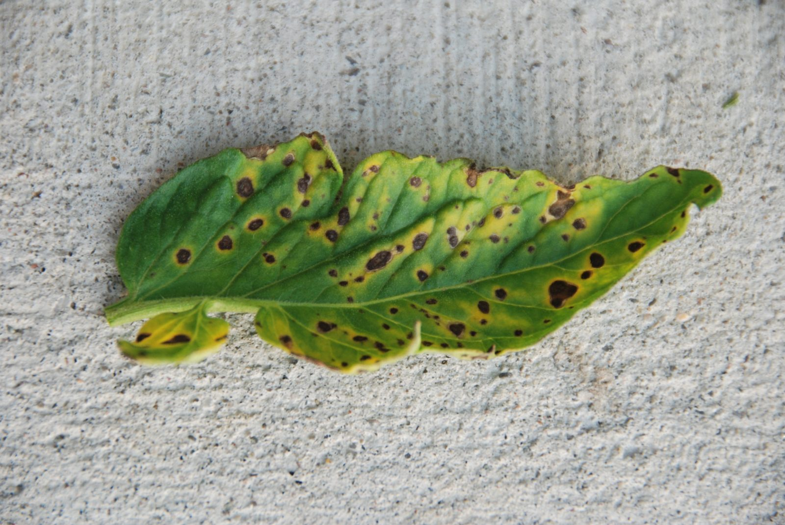

One tomato leaf, start to finish
An example run. The questions and sources are SPROUT’s real ones.

A gardener photographs one leaf
Brown spots showed up on the lower leaves of a tomato plant. The gardener takes one photo of one leaf, in daylight, close enough to see the spots.
What the system is doing
The photo goes to a small Python server. A gate checks it looks like a plant before anything else runs, using the model’s own confidence and how spread out its guesses are; photos of objects are turned away with a tip for a better shot. The photo is turned upright from its camera data and thrown away after the check.
Plant Tomato
- Early blight60%
- Septoria leaf spot24%
- Late blight8%
Not sure yet. Two of these look alike from a photo.
The model names the plant and three suspects
In about a fifth of a second the page shows the plant and the three likeliest diseases with their chances.
What the system is doing
A ConvNeXt V2 image model, trained on 19,260 lab and garden photos, scores all 29 conditions it knows. The scores are calibrated so 90% means right about 90% of the time. SPROUT only calls a result sure at 95% or more (98.5% for a healthy leaf). At 60% it asks instead of answering.
A different leaf: tomato late blight
- Potato late blight78%
- Tomato late blight21%
Is this a potato or a tomato plant?
- Answer: Tomato Tomato late blight 21% to 91%
- One more yes, to “white fuzzy growth on the underside?” 91% to 95%
Sometimes the plant comes first
Late blight looks almost the same on potato and tomato, so a photo alone can lean the wrong way. One tap on the plant fixes it.
What the system is doing
When the top suspects belong to different plants, the first question is which plant. Answering keeps that plant’s conditions and cuts every other plant’s to 2% of its weight. The plant question is asked on about one photo in six. In this real run on a different leaf, tomato late blight went from 21% to 91% on one tap, and to 95% after one more yes.
Early blight
“The lesions develop a bulls-eye pattern of concentric rings.”
University of Maryland Extension, Early Blight of Tomatoes
Septoria leaf spot
“Circular lesions with grayish-white or tan centers and dark brown margins.”
UConn Integrated Pest Management, Tomato Septoria Leaf Spot
The questions come from the guides
Each of SPROUT’s 54 questions was written from the guides’ own description of the symptoms it asks about.
What the system is doing
The questions were written ahead of time, from the extension guides, for the diseases the photo model most often confuses, and each carries the guide passages behind it. 28 of them are about things a photo can’t show: the underside of the leaf, the stem, the fruit, how it spread, timing and weather. The guides themselves are searched with keyword matching (BM25) plus meaning-based matching and a reranker, which is also what finds the passages for the advice and the chat.
Question 1 of up to 8
Do the brown leaf spots have dark rings inside them, like a bull’s-eye?
A yes points to early blight. From University of Maryland Extension.
It asks one question
Each question is about something you can see, answered with a tap. The next question appears at once because the questions are a fixed set, so nothing has to be written while you wait.
What the system is doing
Code looks at the three likeliest diseases and picks the question expected to narrow the odds the most, so the first question is the most informative one. Here that is the bull’s-eye question, which separates early blight from Septoria and late blight.
- Early blight96%
- Target spot2%
- Septoria leaf spot2%
- Dark rings inside the spots Yes, 60% to 85%
- Dark, elongated spots on the stems Yes, 85% to 93%
- Started on the lowest, oldest leaves Yes, 93% to 96%
Each answer moves the odds
A yes counts for the diseases the question’s guide passage describes and against the ones a no would point to, and not sure counts for very little.
What the system is doing
Code multiplies each disease by how likely that answer is if it were the right one, then rescales everything to add up to 100%. Those likelihoods were fitted on a separate development set, not set by hand, and each extra question counts a little less than the one before because answers overlap. It stops once one disease passes 95% (98.5% for healthy), after eight questions, or when no question can separate the suspects any more.
Keep plants mulched so soil doesn’t splash onto leaves, water at the base, and remove infected leaves during the season. A fungicide labelled for early blight can slow it; follow the label.
University of Maryland Extension, Early Blight of Tomatoes
SPROUT says “sure” at 95% or more.
The answer, with where it came from
Early blight, 96% sure, with care advice from the University of Maryland Extension guide.
What the system is doing
The advice was drafted in the background as soon as early blight became likely, so it appears with the answer. It is written only from the guide passages it cites. Below the 95% bar the answer reads “Likely” (70% or more) or “Best guess”, with a suggestion to try a closer photo.
The lowest leaves are turning yellow and dropping off.
That fits early blight: it usually starts on the lower leaves and works its way up. Pruning the lowest leaf branches once fruit sets helps.
University of Maryland Extension, Early Blight of Tomatoes
Early blight 96% to 98%
Can I still eat the tomatoes?
The guides I searched don’t cover that, so this is general advice, not from a guide: cut away any spotted parts and ask your local extension office if you’re unsure.
Then you can ask about your plant
The chat answers follow-up questions and remembers the conversation, so the gardener can describe what else they see.
What the system is doing
Each message is answered from the guide passages for the diagnosis, with numbered sources; anything the guides don’t cover is marked as general advice. When the gardener describes a symptom, the AI model points to their own words as evidence and the same code moves the odds: here, “lowest leaves turning yellow” fits early blight, 96% to 98%. A plain question never moves the odds.
That’s the whole check.
Photo, three questions, a diagnosis and a conversation.You’ve finished the walkthrough
See how each part is built, or try it on a leaf of your own.